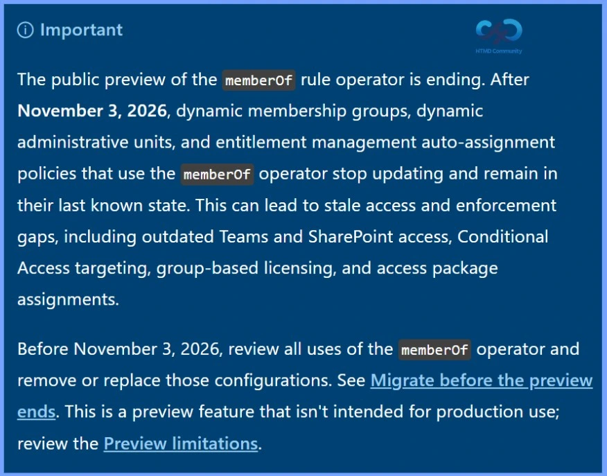
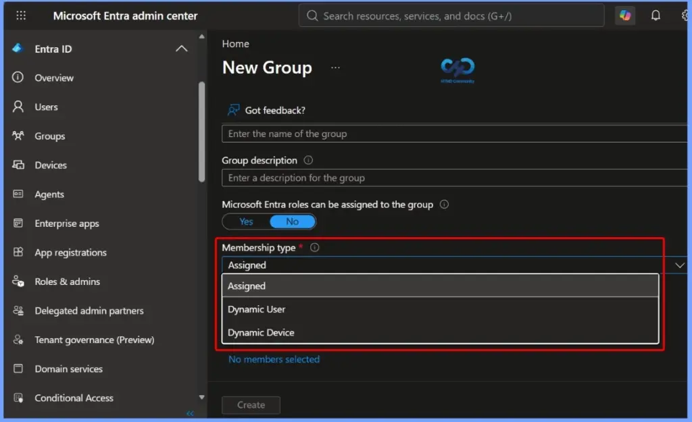
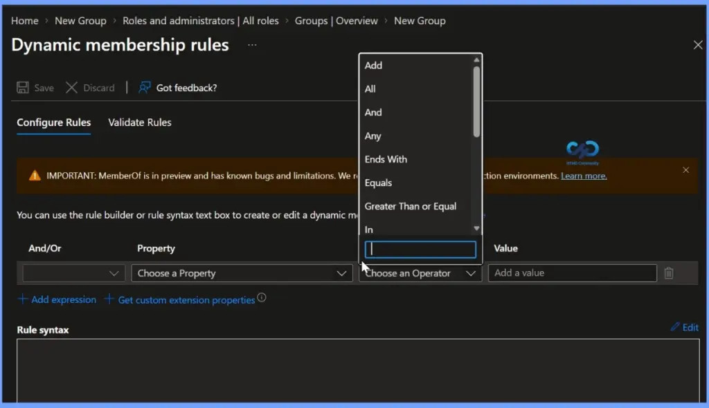

Key Takeaways
- The memberOf Rule Operator Public Preview Is Ending
- memberOf-Based Configurations Will Stop Updating
- Stale Membership Can Impact Access
- Review and Replace Existing Configurations
- The Feature Was Never Intended for Production
Migrate Entra memberOf-Based Configurations to Protect Teams SharePoint Conditional Access Group-Based Licensing etcc! The memberOf rule operator public preview will end on November 3, 2026. After this date, any dynamic membership groups, dynamic administrative units, and entitlement management auto-assignment policies that use the memberOf operator will no longer update automatically. Instead, they will remain in their last known state.
Table of Content
Migrate memberOf-Based Configurations to Protect Teams SharePoint Conditional Access Group-Based Licensing etc
Because these configurations stop updating, group memberships and access permissions can become outdated over time. This may result in stale access and enforcement gaps, affecting services such as Microsoft Teams, SharePoint, Conditional Access, group-based licensing, and access package assignments. To avoid these issues, Microsoft recommends reviewing and replacing all memberOf-based configurations before the preview ends.
- Before November 3, 2026
- Review all dynamic membership groups, dynamic administrative units, and entitlement management policies that use the memberOf rule operator.
- Remove or replace all memberOf-based configurations with supported alternatives before the preview ends.
- Complete the migration before November 3, 2026 to avoid stale memberships and access issues.
- Remember that the memberOf rule operator is a public preview feature and was not intended for production use.
- Review the preview limitations and Microsoft’s migration guidance before making changes.

Microsoft Ending the memberOf Preview
Microsoft is ending the memberOf public preview to improve the performance, scalability, and reliability of dynamic membership processing. During the preview, Microsoft found that using the memberOf operator could slow down dynamic group processing across an entire tenant. Because it is a preview feature, Microsoft does not recommend using it in production environments.
- Microsoft does not recommend using memberOf in production because it is a preview feature.
- Microsoft is developing a more scalable and reliable alternative.
- Review and replace all memberOf-based configurations before November 3, 2026.
- After the deadline, memberOf-based configurations will stop updating and remain in their last known state.
- Outdated group memberships can lead to stale access and security enforcement gaps.

Migrate memberOf-Based Configurations
The memberOf rule operator public preview will end on November 3, 2026, so it is important to review and migrate any configurations that use it before the deadline. Replacing memberOf-based rules with supported alternatives will help ensure that dynamic groups, administrative units, and entitlement management policies continue to work as expected.

| Configuration | Identify | Replace | Validate |
|---|---|---|---|
| Dynamic Membership Groups | Export dynamic membership groups from the Microsoft Entra admin center and identify rules that use memberOf. | Replace memberOf with supported rule operators or convert the group to assigned membership. | Verify group membership after the changes. Pause or delete the group if it is no longer needed. |
| Dynamic Administrative Units | Use Microsoft Graph PowerShell to identify dynamic administrative units that use memberOf rules. | Replace memberOf rules with supported logic or convert the administrative unit to assigned membership. | Verify membership and administrative scope. Delete the administrative unit if it is no longer needed. |
| Entitlement Management Auto-Assignment Policies | Use Microsoft Graph PowerShell to identify auto-assignment policies that use memberOf. | Replace memberOf with supported attribute-based rules or use an alternative assignment method. | Verify that access package assignments work correctly after the changes. |

Need Further Assistance or Have Technical Questions?
Join the LinkedIn Page and Telegram group to get the latest step-by-step guides and news updates. Join our Meetup Page to participate in User group meetings. Also, join the WhatsApp Community and the Whatsapp channel to get the latest news on Microsoft Technologies. We are there on Reddit as well.
Author
Anoop C Nair is a Workplace Technology solution architect with 25+ years of experience. Microsoft Certified Trainer. Microsoft MVP from 2015 onwards for consecutive 11+ years! He is a blogger, Speaker, and Founder of HTMD Community and HTMD Conference. His main focus is on Device Management technologies like Intune, Windows, and Cloud PC. He writes about technologies like Intune, SCCM, Windows, Cloud PC, Entra, and Microsoft Security.